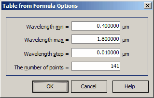
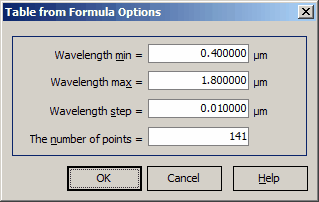

Table from Formula
- To perform a conversion from formula to spreadsheet
presentation:

Specify the wavelength region of interest.
2. Set the required number of spectral points. Conversion is performed after pressing the OK button.
- To perform a conversion from formula to spreadsheet
presentation:

Specify the wavelength region of interest.
2. Set the required number of spectral points. Conversion is performed after pressing the OK button.